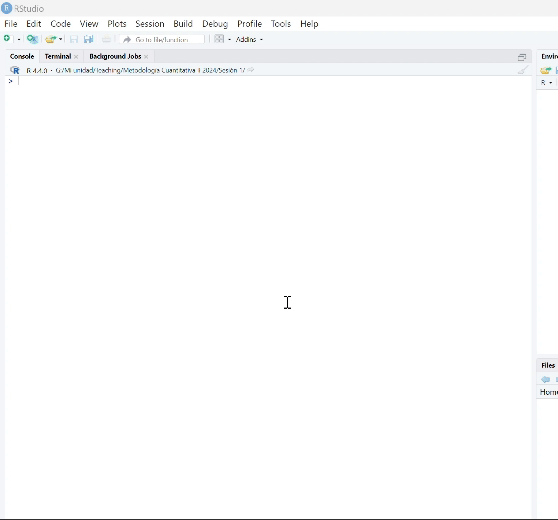

Hola, ¡bienvenido a R! R es un lenguaje de programación de código abierto con una apasionada comunidad global y utilizado en diversos campos disciplinares. Ha sido diseñado específicamente para el análisis estadístico y la visualización de datos, pero es ampliamente flexible. Por ejemplo, sus extensiones han dado forma a la creación de sitios web, aplicaciones, e incluso el documento que estas leyendo ahora mismo.
Instalación de R y RStudio
Para empezar a utilizar R y RStudio, primero debes instalarlos en tu computador. Vamos paso a paso para instalarlo según el sistema operativo (Windows, macOS y Linux) que tengas.
En la página de CRAN, verás enlaces para diferentes sistemas operativos. Haz clic en el enlace de tu sistema operativo (Windows, macOS o Linux).
Descarga e instala R:
Sigue las instrucciones específicas para tu sistema operativo:
Windows: Haz clic en “Download R for Windows” y luego en “base”. Descarga el instalador ejecutable (.exe) y ábrelo. Sigue las instrucciones del instalador para completar la instalación.
macOS: Haz clic en “Download R for macOS”. Descarga el archivo de paquete (.pkg) y ábrelo. Sigue las instrucciones del instalador para completar la instalación.
Linux: Sigue las instrucciones específicas para tu distribución de Linux en la sección correspondiente de CRAN. Generalmente, esto implicará agregar un repositorio CRAN a tu gestor de paquetes y luego instalar R usando tu gestor de paquetes (por ejemplo, sudo apt-get install r-base para Ubuntu).
Paso 2: Instalación de RStudio
Visita el sitio oficial de RStudio:
Abre tu navegador web y dirígete al sitio web Posit para descargar el instalador: RStudio Download.
Descarga el instalador de RStudio:
En la página de descarga, verás diferentes opciones de instalador para distintos sistemas operativos. Haz clic en el enlace correspondiente a tu sistema operativo.
Instala RStudio:
Sigue las instrucciones específicas del instalador:
🪟 Windows: Descarga el instalador ejecutable (.exe) y ábrelo. Sigue las instrucciones del instalador para completar la instalación.
🍎 macOS: Descarga el archivo de paquete (.dmg) y ábrelo. Arrastra el ícono de RStudio a tu carpeta de Aplicaciones.
🐧 Linux: Descarga el archivo de paquete adecuado para tu distribución (por ejemplo, .deb para Ubuntu o .rpm para Fedora). Abre una terminal y usa tu gestor de paquetes para instalar el archivo (por ejemplo, sudo dpkg -i rstudio-x.yy.zz-amd64.deb para Ubuntu).
Una vez completada la instalación de R y RStudio, abre RStudio y ¡listo!
De ahora en adelante emplearemos RStudio, que es la interfaz que nos permite utilizar R de una forma algo más amigable. Digo “más amigable” porque en realidad, aunque en un principio lo percibas algo críptico esto de analizar datos usando código, en realidad verás que en estas guías de paso a paso te abrirán las puertas para descubrir este (nuevo) universo con mucha facilidad.
¿Sabías que? También puedes colaborar en R con tus colegas usando Posit Cloud. Es algo así como un Google Docs en la nube, pero en R.
Te invito a que crees un guión (R Script)📋 en RStudio dirigiéndote en la esquina superior izquierda de la pantalla.

Como podrás haber notado, la interfaz de RStudio está organizada en varios paneles, cada uno con un propósito:
Panel de Script (arriba a la izquierda): Aquí es donde escribes y editas tu código R. Puedes guardar tus scripts como archivos .R para usarlos más tarde.
Panel de Consola (abajo a la izquierda): Muestra los resultados de la ejecución de tu código, mensajes de error y advertencias. También, puedes escribir comandos directamente en la consola.
Panel de Entorno/Historia (arriba a la derecha):
Entorno: Muestra las variables, funciones y objetos de datos que has creado en tu sesión actual de R.
Historia: Registra los comandos que has ejecutado anteriormente.
Panel de Archivos/Gráficos/Ayuda/Visualizador (abajo a la derecha):
Archivos: Explora los archivos y directorios de tu proyecto.
Gráficos: Muestra los gráficos que creas en R.
Ayuda: Accede a la documentación de R y a los archivos de ayuda de los paquetes instalados.
Visualizador: Examina objetos de datos como tablas y marcos de datos en un formato más fácil de leer.
Note
La interfaz de RStudio es altamente personalizable, permitiéndote ordenar los paneles de la manera que prefieras y ajustar la apariencia del entorno para adaptarlo a tu gusto. ¡Sí! Puedes ponerlo en color oscuro y colores cálidos, en lugar del aspecto blanco predeterminado, y así no dañar tus lindos ojitos 👀🌟
Conceptos Básicos🔧
Clarifiquemos primero algunos términos que comúnmente decimos en R. Te presento primero los objetos.
Siéntete libre de copiar y pegar el código de este taller en tu propio script. Para ejecutar una línea de código, simplemente sitúate en la línea y teclea CNTRL + Enter, mientras que en Mac es CMD + Enter.
# Aquí asignamos un valor numérico a un objeto "X"x <-7x
[1] 7
# Aquí creamos un vector de números concatenadosNumVar <-c(5, 3, 4)NumVar
[1] 5 3 4
# Los vectores pueden estar concatenados con información de tipo texto o caracteresCharVar <-c("verde", "amarillo", "verde")CharVar
[1] "verde" "amarillo" "verde"
# También utilizamos datos de tipo factor para representar datos categóricosfactores <-factor(c("femenino", "masculino", "masculino", "femenino"))# Aunque los factores también pueden tener una lógica ordinalfactores_ord <-factor(c("bajo", "medio", "alto", "alto"),ordered =TRUE,levels =c("bajo", "medio", "alto"))factores
# Oh mira, con el símbolo de gato puedes anotar en el código para que no olvides lo que haces
Como podrás haber intuido:
Un vector es una secuencia de datos del mismo tipo.
El nombre creado al objeto es completamente a nuestra elección. Como ves en el ejemplo, puede llamarse CharVar o hola.
En general, trabajarás en R usando un data.frame, que significa cuadro de datos. Un data.frame es un objeto que almacena un conjunto de vectores que, a su vez, pueden ser vectores que almacenan información de tipo numérica, factores, entre otros. Comúnmente, los vectores dentro de un data.frame se les conoce como variables, las cuales son las columnas que almacenan atributos de la unidad de observación de nuestro conjunto de datos representados en las filas. Por ejemplo, las filas pueden ser estudiantes, escuelas, países, mientras que las columna serán sus atributos (e.g., género).
Ejercicio 1: Creando tu primer data.frame() 🕸️
En el guión de R que generaste en tu sesión de RStudio, crea un vector llamado edad que concatene cinco valores numéricos. También, crea un vector llamado nombre que concatene cinco nombres de personas de tipo caracteres.
Crea los vectores como objetos. Luego, utiliza la función data.frame() para almacenarlos.
Sobre este data.frame podrás calcular diferentes estadísticos como un promedio o desviación estándar.
Ejercicio 2: Explorar un data frame 🔍
Crea un objeto llamado CarTab empleando los datos mtcars, el cual son datos de ejemplo de la revista Motor Trend US de 1974, donde cada fila es un auto y sus diferentes atributos (variables). Luego, sobre el objeto CarTab, emplea los comandos class(), str(), head(), y summary(). Termina calculando el promedio de la variable hp usando la función mean().
Escribe CarTab asignándolo con <- y luego escribe mtcars. Para usar los comandos, escribe el comando respectivo y entre los paréntesis escribe el nombre de objeto CarTab. Para el comando mean() tendrás que especificar la columna con $ del objeto.
Resumiendo, puedes manejar diferentes tipos de datos en R: - Numéricos: Números enteros y decimales. - Caracteres: Cadenas de texto. - Factores: Datos categóricos ordenados o no ordenados. - Fechas: Información de tiempo en un formato de fecha, que también puede incluir hora. - Lógicos: Valores de verdad (TRUE o FALSE). - Datos perdidos: Información faltante (NA) en un conjunto de datos.
Ejercicio 3: Gráficos Básicos
En este ejercicio, vamos a crear gráficos básicos utilizando el objeto CarTab.
Crea un gráfico de dispersión:
Muestra la relación entre las variables hp (caballos de fuerza) y mpg (millas por galón) del conjunto de datos CarTab. Para ello, usa el comando plot() indexando el cuadro de datos CarTab con el signo $ con las variables mencionadas anteriormente, separándolos por coma.
Dale color 🎨:
Muestra la relación entre las mismas variables, pero esta vez colorea los puntos de azul. Tendrás que ocupar, dentro de plot(datos$variable1,``datos$variable2``), el argumento col = "" con el nombre del color que desees en inglés (e.g., “red”). Recuerda anteponer una coma , para separar los argumentos de un comando.
Crea un histograma:
Muestra la distribución de la variable qsec (cuarto de milla en segundos) usando el comando hist().
Tip
Los gráficos son útiles para visualizar relaciones y distribuciones de datos. Elige el tipo de gráfico según tus preguntas de investigación y el tipo de análisis que necesites.
Ejercicio 4: Transformación de Variables
En este ejercicio, aprenderás a crear nuevas variables a partir de las existentes en el objeto CarTab.
Tip
Transformar variables te permite crear nuevos indicadores y categorías para análisis más sofisticados.
Crea una nueva variable rhpwt:
Calcula una división entre hp (caballos de fuerza) y wt (peso en miles de libras) y almacénala en una nueva variable rhpwt.
Tip
Usa el operador de división / para calcularlo y guarda el resultado en CarTab indexándolo con el signo $.
Crea una variable categórica Rapido:
Utiliza la función ifelse para crear una nueva variable Rapido que tome el valor 1 si qsec es menor a 18, y 0 en caso contrario.
Tip
La función ifelse() tiene la estructura: ifelse(condición, valor_si_verdadero, valor_si_falso). Úsala para crear la variable Rapido basada en la condición lógica anterior. Usa el operador lógico <.
Ejercicio 5: Indexación o Extracción de Datos
En este ejercicio, aprenderás a extraer subconjuntos de datos del objeto CarTab.
Extrae un subconjunto de datos:
Extrae las columnas qsec y Rapido y almacénalas en un nuevo objeto llamado Sub_CarTab.
Tip
Usa la notación de corchetes []`` para seleccionar columnas específicas de un data frame. La sintaxis esnombre_de_tu_data_frame[ , c(“nombre_columna1”, “nombre_columna2”]`.
Ejercicio 6: Regresión
En este ejercicio, estimarás un modelo de regresión lineal utilizando el objeto CarTab.
Ajusta un modelo de regresión lineal:
Ajusta un modelo de regresión lineal que prediga qsec en función de hp y wt asignado con <- a un objeto que lo llamarás mod1.
Tip
La función lm() ajusta modelos de regresión lineal. La estructura es lm(formula, data), donde formula es una fórmula de la forma variable_dependiente ~ predictor1 + predictor2. Usa summary() para obtener las estimaciones del modelo ajustado, por ejemplo summary(lm(qsec ~ hp + wt, data = CarTab)).
Tip
Al final de este documento encontrarás las soluciones a los ejercicios.
Análisis Descriptivo
¿Cómo se ve un flujo de trabajo inicial de análisis de datos en R? Un flujo de trabajo típico de análisis de datos en R comienza con la configuración del directorio de trabajo. El directorio de trabajo es la carpeta en la que se almacenarán tu script, datos, y los diferentes archivos resultantes de tu análisis, como tablas y gráficos. Establecer el directorio de trabajo te permite organizar tus archivos de manera eficiente y asegura que R sepa dónde buscar y guardar archivos.
¿Cómo establecer tu directorio de trabajo?
Encuentra la ruta del directorio de trabajo:
Windows:
Abre el Explorador de archivos y navega hasta la carpeta donde quieres almacenar tus archivos.
Haz clic en la barra de direcciones y copia la ruta completa.
macOS:
Abre el Finder y navega hasta la carpeta donde quieres almacenar tus archivos.
Haz clic derecho en la carpeta, selecciona “Obtener información” y copia la ruta que aparece en “Dónde”.
Establece el directorio de trabajo en R:
Usa la función setwd() para establecer el directorio de trabajo. La ruta debe estar entre comillas y utilizar barras diagonales (/) en lugar de barras invertidas (\).
# setwd("C:/tu_ruta/del_computador/que_estas/usando")# Ejemplo para Windows: setwd("C:/Users/TuNombre/Magister/MetCuant")# Ejemplo para macOS: setwd("/Users/TuNombre/Magister/MetCuant")
Puedes verificar el directorio de trabajo actual utilizando la función getwd(), que te mostrará la ruta del directorio de trabajo establecido.
Warning
Organiza tus archivos en subcarpetas dentro de tu directorio de trabajo, por ejemplo, data para datos brutos, scripts para tus guiones de R, y outputs para resultados como gráficos y tablas. Te recomiendo el protocolo IPO que puedes ver aquí para organizar tus carpetas. Con esto, tendrás un flujo de trabajo ordenado, y tu futuro yo te lo agradecerá.
Instalación de Paquetes
Para llevar a cabo análisis de datos en R, a menudo necesitamos paquetes adicionales que no vienen incluidos en la instalación base de R. Estos paquetes contienen funciones y datasets adicionales que facilitan diversas tareas.
Instalación de Paquetes:
Usa la función install.packages() para instalar los paquetes necesarios.
options(repos =c(CRAN ="https://cran.r-project.org"))install.packages("readxl") # Paquete para importar datos en formato Excel}install.packages("janitor") # Paquete para limpieza de datosinstall.packages("ggplot2") # Paquete para generar gráficos
Carga de Paquetes:
Después de instalar los paquetes, usa la función library() para cargarlos en tu sesión de R.
library(readxl)library(janitor)library(ggplot2)
Importar Datos
Para importar datos en R desde un archivo Excel, usaremos el paquete readxl.
Importa los datos:
Usa la función read_excel() para leer los datos de un archivo Excel y almacenarlos en un data frame. Asegúrate tener descargado el archivo Excel Base-Personal-Academico-2021_SIES.xlsx en tu directorio de trabajo.
Usa la función View() para abrir una nueva ventana y visualizar la base de datos.
View(personal_2021)
Limpieza de Datos
Los nombres de las variables en la base de datos pueden necesitar limpieza para ser más manejables.
Limpia los nombres de las variables:
Usa la función clean_names() del paquete janitor para estandarizar los nombres de las variables.
personal_2021 <-clean_names(personal_2021)
Exploremos los datos:
Usa diversas funciones para obtener una visión general de los datos.
class(personal_2021) # Muestra la clase de objeto de personal_2021head(personal_2021) # Muestra los primeros 6 casos en la base de datosnames(personal_2021) # Lista los nombres de las variables en la base de datosdim(personal_2021) # Muestra el número de variables y casossummary(personal_2021) # Entrega estadísticos descriptivos para cada variablestr(personal_2021) # Muestra la estructura interna de la base de datos
Generación de Nuevas Variables
Crear una nueva variable tipo_ies:
Primero, genera una nueva variable tipo_ies que inicialmente sea igual a codigo_institucion.
mpg cyl disp hp
Min. :10.40 Min. :4.000 Min. : 71.1 Min. : 52.0
1st Qu.:15.43 1st Qu.:4.000 1st Qu.:120.8 1st Qu.: 96.5
Median :19.20 Median :6.000 Median :196.3 Median :123.0
Mean :20.09 Mean :6.188 Mean :230.7 Mean :146.7
3rd Qu.:22.80 3rd Qu.:8.000 3rd Qu.:326.0 3rd Qu.:180.0
Max. :33.90 Max. :8.000 Max. :472.0 Max. :335.0
drat wt qsec vs
Min. :2.760 Min. :1.513 Min. :14.50 Min. :0.0000
1st Qu.:3.080 1st Qu.:2.581 1st Qu.:16.89 1st Qu.:0.0000
Median :3.695 Median :3.325 Median :17.71 Median :0.0000
Mean :3.597 Mean :3.217 Mean :17.85 Mean :0.4375
3rd Qu.:3.920 3rd Qu.:3.610 3rd Qu.:18.90 3rd Qu.:1.0000
Max. :4.930 Max. :5.424 Max. :22.90 Max. :1.0000
am gear carb
Min. :0.0000 Min. :3.000 Min. :1.000
1st Qu.:0.0000 1st Qu.:3.000 1st Qu.:2.000
Median :0.0000 Median :4.000 Median :2.000
Mean :0.4062 Mean :3.688 Mean :2.812
3rd Qu.:1.0000 3rd Qu.:4.000 3rd Qu.:4.000
Max. :1.0000 Max. :5.000 Max. :8.000
CarTab <- mtcarsmod1 <-lm(qsec ~ hp + wt, data = CarTab)summary(mod1)
Call:
lm(formula = qsec ~ hp + wt, data = CarTab)
Residuals:
Min 1Q Median 3Q Max
-1.8283 -0.4055 -0.1464 0.3519 3.7030
Coefficients:
Estimate Std. Error t value Pr(>|t|)
(Intercept) 18.825585 0.671867 28.020 < 2e-16 ***
hp -0.027310 0.003795 -7.197 6.36e-08 ***
wt 0.941532 0.265897 3.541 0.00137 **
---
Signif. codes: 0 '***' 0.001 '**' 0.01 '*' 0.05 '.' 0.1 ' ' 1
Residual standard error: 1.09 on 29 degrees of freedom
Multiple R-squared: 0.652, Adjusted R-squared: 0.628
F-statistic: 27.17 on 2 and 29 DF, p-value: 2.251e-07
Para citar este archivo Quarto, por favor, considera este formato: Montero, M., Ortega, L. & Rodríguez, P. (2024). Metodología Cuantitativa II 2024 [Repositorio]. GitHub. https://github.com/monteromati/Metodologia-Cuantitativa-II-2024